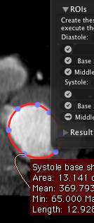

A set of simple geometrical algorithms were developed to calculate left ventricular volumes and ejection fraction from different ventricular planes. Four of the most popular geometrical approximation techniques were implemented. To use these EF calculation tools the user must outline the LV cavity manually in different planes in systole and diastole to automatically calculate the resulting volumes and ejection fraction.
The user interface is split in three parts: algorithm choice, ROI tracking and results.
Algorithms
The algorithm determines how the cardiac volume is computed from the ROIs you specify. The following algorithms are currently available:
- Biplane area-length technique
This geometric approximation is based on the assumption of an elliptic shape of the left ventricle. It uses the length of the long axis of the left ventricle and the area of the LV in two orthogonal long axis views to generate approximative ellipses and calculate the volume from the resulting ellipsoid. In general this technique is applied to orthogonal projections in cardiac angiography (LAO and RAO projections) but can also be applied to tomographic images obtained in two orthogonal planes such as the horizontal long axis plane (four chamber view) and vertical long axis view (two chamber view).
- Single-plane area-length technique (Monoplane)
This geometric approximation is similar to the biplane area-length technique described above with a limitation to cases where only a single long axis view of the left ventricle is available. It uses the length of the long axis of the left ventricle and the area of the LV to generate the corresponding ellipsoid. In general this technique is applied to single plane projections in cardiac angiography (usually in RAO projections) but can also be applied to tomographic images obtained in long axis planes such as the horizontal long axis plane (four chamber view) or the vertical long axis view (two chamber view) or the LVOT long axis view.
- Modified Simpson technique
This geometric approximation is based on a modified geometric formula from the original Simpson formula that was originally based on multiple adjacent short axis planes of a given thickness. This simplified version requires only two short axis planes and a long axis plane to calculate the length of the ventricle. It assumes a cylindric shape of the ventricle where the two short axis correspond to the area of the base and the mid segment of the ventricle.
- Cylinder method (Hemi-ellipse)
This geometric approximation is based on a simplified geometric version from the modified Simpson formula described above. This simplified version only requires one short axis plane and a long axis plane to calculate the length of the ventricle. It assumes a cylindric shape of the ventricle where the short axis correspond to the area of the mid segment of the ventricle.
- Teichholz method
This geometric approximation is based on a simplified geometric method that was often used for estimating LV ejection fraction from M-mode echocardiograms where the diameter of the left ventricle can be measured in systole and diastole in the short axis plane in the mid ventricle. This simplified version only requires one short axis plane (preferably in the middle of the ventricle) to measure the LV diameter in systole and diastole. The ejection fraction is estimated from a correlation table that relates the LV diameter to the ejection fraction with a simple linear regression formula. The correlation was established based on left ventricle that have a normal shape and homogeneous contractility.
ROIs
Once you have selected the algorithm, the interface shows you a list of ROIs required by the algorithm you picked.
When a ROI is recognized as one from which the diastole or systole volumes are computed, the plugin sets it to be drawn in the color linked to either systole or diastole. You can pick your preferred colors by clicking on the color buttons.
By clicking on the ROI buttons, the ideal ROI tool is selected and the interface waits for you to create a ROI. This is shown on the interface as an arrow shown on the left side of the button.
When you create a new ROI, this new ROI is automatically used for the role described by the button. An assigned role is shown on the interface as a check mark on the left side of the button. On the viewer, the ROI
If you wish to assign a role to an already existing ROI, right-click on it and select the role on the Enection Fraction submenu. Also, at any point in time you can modify the ROIs that you defined earlier: the plugin will handle the changes.
Results
Once all ROIs have been specified, the resulting ejection fraction value is shown on the window. If you want to obtain a more detailed view on the result, click on the Details button.
The export and print buttons allow you to save the image as a DICOM file (or node), a TIFF, a PDF. Notice that the obtained image will have the same size as the window at the moment you do the export.